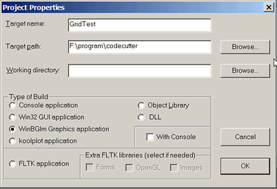
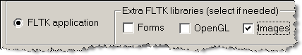
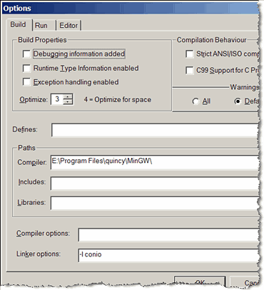

The Quincy 2005 Windows installer is available for download on the Quincy 2005 web page http://quincy.codecutter.org
To install, run the installer and follow very basic screen instructions.
This will install all the components (including help, program examples and graphics libraries). No extra downloads are necessary.
Quincy 2005 is not distributed on CD.
Quincy 2002 legacy:
The compiler and some programming examples were originally distributed on a CD that came with a book of Al Stevens (now probably out of stock). Quincy 2005 no longer supports that CD. If you have that book and CD and want to run the CD examples, please install the version of Quincy on the CD, or download it from Al's Quincy page: http://alstevens.com/quincy.html
The installation instructions given in the Quincy 2002 part of the guide were for the CD installation. They do not apply to Quincy 2005. The program examples installed with Quincy 2005 are not the examples that came with the book and CD.
To develop software using a graphics library supported by Quincy, a project file must be created using the menu entry: [File]->[New]->[Project]. This will open a Project Properties page:

Select the type of program you want to build.
If a graphics type is selected, the associated graphics libraries will be linked automatically to the program by Quincy.
A graphical program that displays in the usual windows may also come with a supplementary "console" (the white-on-black "DOS" screen) that can be used for standard input/output, or for displaying error messages. If that is what you want, you must select the "With Console" tick-box by clicking on it.
A FLTK application is special in that the standard FLTK libraries may need to be supplemented by extra libraries if your program uses images, or forms, or extra functions available in OpenGL. These tick-boxes become available when "FLTK application" is selected.

Installing:
You may import other 3rd party libraries to be used in Quincy. To get these to work in Quincy, you must install the 3rd party header files (with .h extension) into the ...\quincy\include folder, and you must install the 3rd party libraries (with .a extension) into the ...\quincy\lib folder.
To ensure that 3rd party libraries you have installed as above are linked against a program that uses them, you must tell Quincy to flag them to the linker. In order to do this, you must indicate the library to use in the [Tools]->[Options]->[Build] screen as a linker option.
Example: In the "Options" screen below, the extra library "libconio.a" (which already exists in the quincy/lib" folder) is requested by the flag -l conio. The conio2 functions stored in "libconio.a" will be linked to the program currently under development when the programmer asks Quincy to build that program.

The "libconio.a" library file is part of the 3rd party "conio2" library: a modern replacement for the old Borland-style "conio" library. It is distributed on sourceforge ( http://conio.sourceforge.net ). Conio2 is pre-installed as a 3rd party library in Quincy. It is described in the Programmer's help, and examples of use are given in the Quincy example programs.